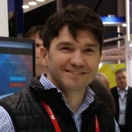

Intro

I am Sergey Lyubka, an engineer and entrepeneur
(my LinkedIn).
I am a director and co-founder of Cesanta,
a technology company based in Dublin, Ireland. We develop
Mongoose - an open source embedded
network stack.
I hold an MSc degree in Physics from Kyiv State University, Ukraine.
Interested in technology, holistic health, history and finance.
Tutorials
Tools
- stars - display graph of a project star count in time
- bugs - show bugs and PRs for projects
- bits - display bits for numbers (used to analyze MCU registers)
- ecc - ECC curve visualisation
Software
- mdk - bare-metal SDK for ESP32C3
- esputil - ESP32 flashing utility for Windows, Linux, Mac
- elk - tiny embedded JS engine
- mongoose - embedded http/websocket/mqtt library
- str - single header string library for microcontrollers
Books
Quotes
A selection of quotes from the books I've read.